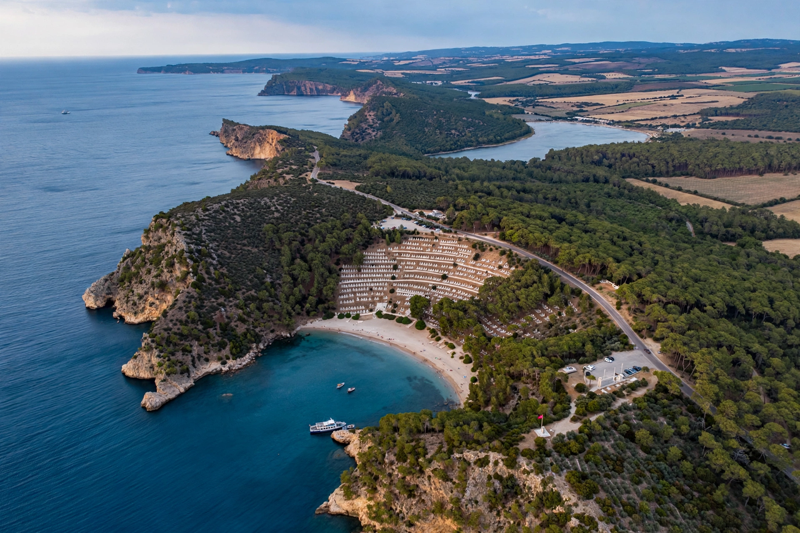

From Wikipedia, the free encyclopedia
| Gallipoli | |
|---|---|
 The Gallipoli peninsula, Turkey | |
| Location | Çanakkale Province, Turkey |
| Turkish name | Gelibolu |
| Known for | Gallipoli campaign (1915–16) |
| Strategic feature | European shore of the Dardanelles |
Gallipoli (Turkish: Gelibolu) is a peninsula in northwestern Turkey, forming the northern shore of the Dardanelles strait and the southern coast of the Gulf of Saros in the Aegean Sea. The name derives from the Greek Kallipolis, "beautiful city." The peninsula is world-famous as the site of the Gallipoli campaign of the First World War.
About 80 kilometres long and up to 20 kilometres wide, the rugged peninsula guards the maritime route from the Aegean to the Sea of Marmara and Istanbul. Settled since antiquity — nearby Troy lies across the strait — it was a prize in Byzantine and Ottoman history; the Ottomans gained their first European foothold here in 1354. The town of Gelibolu was an Ottoman naval base, and the straits were fortified at the Narrows near Çanakkale.
In 1915 the Allies — Britain, France, and their empires — attempted to force the Dardanelles, knock the Ottoman Empire out of the war, and open a supply route to Russia. A purely naval attack on 18 March 1915 failed with the loss of three battleships to mines. Landings followed on 25 April 1915 at Cape Helles and at what became Anzac Cove, where the Australian and New Zealand Army Corps came ashore. Ottoman forces, coordinated by Mustafa Kemal — the future Atatürk — and under the overall direction of the German general Otto Liman von Sanders, contained the beachheads.
The August Offensive, including the Landing at Suvla Bay and the assault on Chunuk Bair, failed to break the stalemate. Disease, heat, and then a bitter winter ravaged both sides. The Allies evacuated in December 1915 and January 1916 — the campaign's most flawlessly executed phase — having suffered roughly a quarter of a million casualties, matched by similar Ottoman losses.
Gallipoli forged national myths on both sides: Anzac Day (25 April) is Australia's and New Zealand's principal day of remembrance, while the defence of Çanakkale is celebrated in Turkey as a founding triumph that launched Atatürk's career. The battlefields and cemeteries, administered in part by the Commonwealth War Graves Commission, now form a protected historic national park visited by thousands each year.